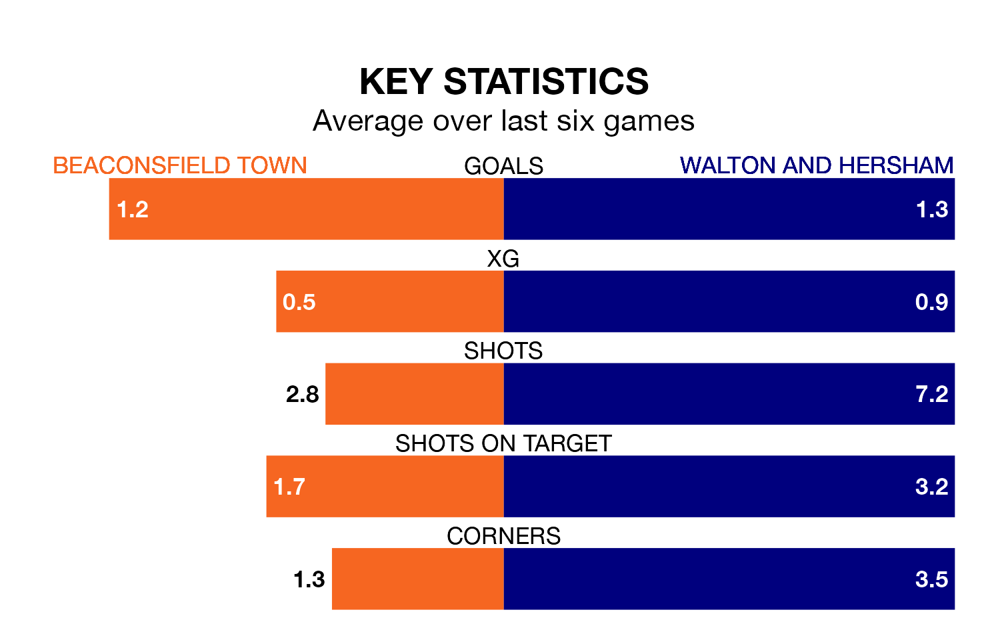

Walton and Hersham travel to Beaconsfield Town on Saturday in the Southern League Premier South.
The visitors come into the game on the back of a draw in their last match, having tied with Didcot Town 1-1 away.
Beaconsfield, meanwhile, won their last match, 1-0 against Didcot Town.
With 47 goals in 31 games so far this season, Beaconsfield are scoring at below the league average rate with 1.5 goals per game. And they are conceding more than average, letting in 56 goals at a rate of 1.8 per game.
Walton & Hersham, meanwhile, are above average scorers, with 1.9 goals per game, compared to a league average of 1.7. They have conceded 1.6 goals per game.
The away team are sixth in the table after 30 games, of which they have won 13 and drawn seven, earning 46 points.
Town are nine places behind Walton & Hersham in 15th, with nine wins and eight draws putting them on 35 points.
In the last five years, Beaconsfield and Walton & Hersham have played each other on five occasions. Beaconsfield won one of them, Walton & Hersham two, and they drew twice.
On average, Beaconsfield scored 1.0 goal and Walton & Hersham 1.2 in those matches.
Their last meeting was on October 21, when Walton & Hersham won 1-0 at home.
The hosts are in reasonable form in the Southern League Premier South, with three wins and two draws from their last six games.
With three wins and a draw over that period, Walton & Hersham's form is slightly worse – they have taken 10 points from 18, compared to Beaconsfield's 11.
Updated: 10:08 (UTC), 23/02/24